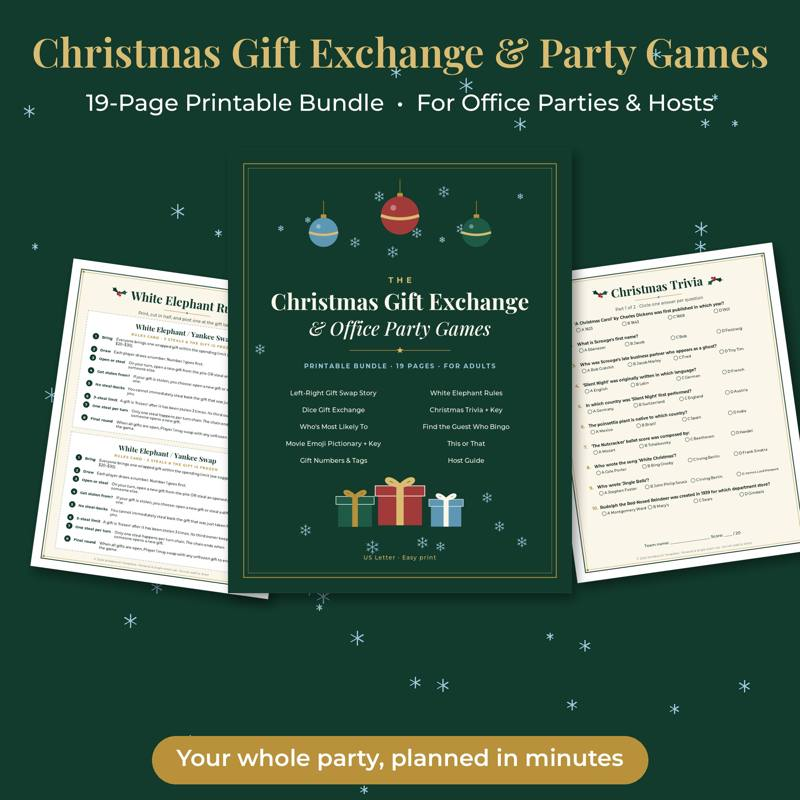
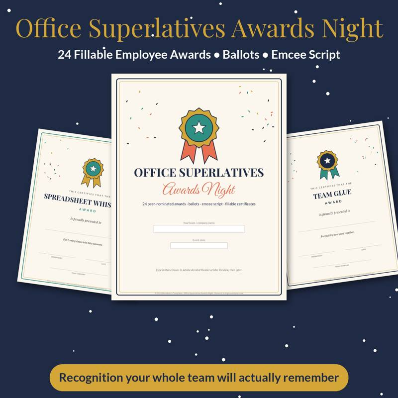

Christmas Party Games for Adults (No Supplies Needed)
The best Christmas party games for adults have one thing in common: nobody has to run to the store first. If you're hosting a holiday get-together and realize an hour before guests arrive that you have no props, no game boards and no plan, you're fine. Every game below works with a room full of grown-ups and nothing else.
How to pick the right game for your group
Before you choose, think about three things: group size, how well people know each other, and the energy level of the room. A dinner party of eight old friends can handle a long storytelling game. A mixed office crowd does better with quick rounds where nobody is put on the spot alone. A general rule: start with something low-stakes where people answer in a group, then move to games where individuals perform once everyone has loosened up.
Icebreakers for mixed crowds
1. Two Gifts and a Lie
A holiday twist on the classic. Each person describes three gifts they've received in their life — two real, one invented. The group guesses the fake. It works because the stories that come out (the hand-knit sweater from a great-aunt, the year someone got a pet goldfish in a stocking) are genuinely fun to hear.
2. Holiday Hot Seat
One person sits in the "hot seat" and answers rapid-fire either/or questions for 30 seconds: real tree or fake? Eggnog or cocoa? Wrap gifts early or the night before? The group keeps a loose count of answers that surprise them. Keep it moving so nobody is stuck for long.
3. The Christmas Movie Pitch
Split into teams of three or four. Each team gets five minutes to invent a terrible made-for-TV holiday movie: a title, a small-town setting, a big-city professional who learns the true meaning of Christmas, and a twist. Teams pitch to the room, and everyone votes by applause.
Word and guessing games
4. Holiday Categories
Someone names a category — reindeer names, things you'd find in a stocking, holiday songs — and players go around the circle naming items. Hesitate for more than three seconds or repeat an answer and you're out. Last one standing picks the next category.
5. Silent Carol
One person hums nothing at all — they mouth the words to a well-known holiday song with exaggerated expressions. First person to guess the song goes next. It's harder than it sounds and very funny to watch.
6. Twenty Questions: North Pole Edition
One player thinks of a holiday character or object. Everyone else gets 20 yes-or-no questions to figure it out. Characters from classic holiday stories, famous treats, and decorations all work.
7. Finish the Lyric
Start singing the first line of a holiday song and stop mid-phrase. The next person has to finish the line. Anyone who gets it wrong becomes the next starter. Good for groups who like music but don't want full-on karaoke.
Active games (still no supplies)
8. Human Snow Globe
Everyone freezes in a pose when the host says "shake." The host then "shakes the globe" by calling out a scene — "carolers in a blizzard," "elves on a lunch break" — and everyone has five seconds to strike a new pose. Anyone who moves after "freeze" sits out the round.
9. Reindeer Relay
Teams line up. The first player must walk to a point across the room and back while doing a reindeer impression (antler hands required) and naming a reindeer. No name can be repeated within a team. It falls apart fast, which is the point.
10. Santa Says
Simon Says, but Santa. It sounds childish; adults playing it after dinner get surprisingly competitive.
Storytelling and conversation games
11. The One-Word Christmas Story
Sit in a circle. Each person adds one word to a story that starts with "Once upon a Christmas Eve…" The story will go off the rails. Appoint someone to summarize the plot at the end.
12. Worst Gift Ever
Everyone takes a turn describing the strangest or worst gift they've ever received (or given). The group votes on the winner. This one is reliably the game people remember the next day.
13. Holiday Would You Rather
Prepare a few in your head or invent them on the spot: Would you rather have to wear a full Santa suit every day in December, or only be able to speak in Christmas carol lyrics for a day? Let people argue their answers.
14. Who Am I, Holiday Edition
Each person secretly picks a holiday character for the person to their left and tells them nothing — instead, the group gives clues until the player guesses who they are. If you happen to have a pen and sticky notes, writing the name on the player's forehead makes it classic, but whispered assignments work fine.
Tips for running games that adults actually enjoy
- Keep rounds short. Five to ten minutes per game is ideal. End while people are still laughing.
- Make participation optional. Let anyone who would rather watch be the judge, scorekeeper or timer.
- Avoid games that embarrass individuals. Team-based and group-answer formats are safer with coworkers or new friends.
- Have a loose order. Plan three games: a warm-up, a main event and a closer. Skip the rest if the party is already humming.
- Offer small prizes if you can. Even a leftover cookie tin or bragging rights works.
When you want a little more structure
No-supply games are perfect for spontaneous fun, but for a planned office party or a big family gathering, a printed game can carry the energy for you — everyone gets the same instructions, and the host doesn't have to referee from memory. Our Christmas Office Party Games printable includes ready-to-print gift exchange and group games, and if you're hosting for coworkers, the Office Awards Night certificates make a fun closing moment where everyone gets a kind, funny award.
For more holiday hosting ideas, see our ugly sweater contest guide and our cookie exchange party ideas.

Printable gift exchange and Christmas party games for groups.
See it on Payhip
Shop the printables mentioned
Christmas Office Party Games
Printable gift exchange and Christmas party games for groups.
View on Payhip
Office Awards Night
24 funny, kind office award certificates for employee appreciation.
View on PayhipMore guides
- Baby Shower Prediction Game Ideas (and How to Run Them)
- Bridal Shower Games That Aren't Cringe
- Chili Cook-Off Rules and Scoring: A Complete Host Guide
- Cookie Exchange Party Ideas: How to Host a Christmas Cookie Swap
- A Family Chore System That Actually Works
- Galentine's Party Games Your Friends Will Actually Love
- The Meal Planning Game: How to Get Your Family to Help Plan Dinners
- New Year's Eve Family Traditions Kids Will Love
- Snow Day Activities for Kids: 30 Ideas Indoors and Out
- Teacher Gift Ideas From the Whole Class (Thoughtful and Budget-Friendly)
- Thanksgiving Kids Table Activities That Keep Them Busy
- Ugly Sweater Contest Ideas: Categories, Judging and Fun Twists
- Vacation Rental Cleaning Checklist: Room-by-Room Turnover Guide
- Valentine's Escape Room for Couples at Home: How to Set One Up